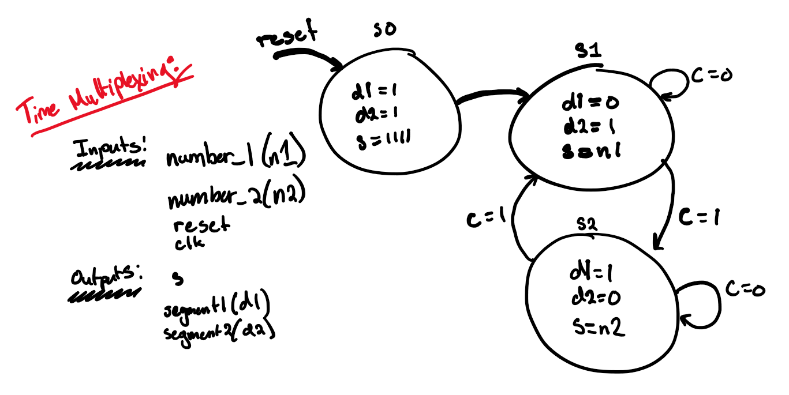
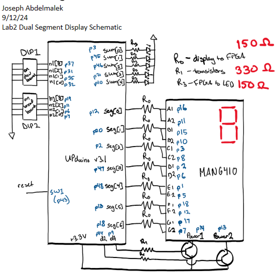

E155 Lab 2: Multiplexing 7-Segment Display
Lab Overview
In this lab, the goal was to use the seven-segment display module from Lab 1 to power a dual seven-segment display. However, instead of running two separate modules and taking up double the space, the goal for this lab was to practice time-multiplexing, a technique used to share a hardware resources for different purposes. In addition to this, we also needed to set up LEDs to take the sum of the two digits that were given as inputs. This display would be able to sum the two hexadecimal digits at all times (regardless of multiplexing) and display the binary sum on 5 LEDs. The instructions for this lab can be found on the HMC E155 Website under Lab 2
Discovering Multiplexing
The first step in completing this lab was understanding and mapping out how to multiplex our signal. This was done by creating an input and output table for the multiplex module and then creating a state transition diagram. This diagram (shown below) indicates that in states 1 and two, we wait for a counter variable C before switching. When the counter has reached a certain limit, it will indicate a change in state and then reset to 0 and start over again. This counter is what we will use to determine the multiplex speed, making sure that it is fast enough to seem like two simultaneous signals to the naked eye but slow enough to prevent the values of the digits from bleeding through to the other digit.
 Figure 1: State transition diagram for the multiplexing module.
Now that this was mapped out, I moved into designing my top module and identifying the modules I needed inside it. Drawing it out below, I used 4 modules within my top module: an HSOSC module (which is done within the top module and instantiates the clock), an LED sum module, the multiplex module from above, and my original (and unchanged) seven-segment display module from Lab 1.
Figure 2: State transition diagram for the multiplexing module.
| Inputs | Outputs |
|---|---|
| clk, reset | d1, d2 |
| [3:0] n1, n2 | [4:0] sum |
| [6:0] seg |
From here, I was able to write my SystemVerilog in Radiant. See that code here.
Questa/ModelSim Testing
Given this, I was able to write up my top and submodules and test them in Questa/ModelSim using testbenches. Multiple test benches were written so as to be able to test each module individually and the top module as well. The top module was able to tell the most in one image, shown below.
Figure 3: State transition diagram for the multiplexing module.
From the image, we see that our LED sum module works correctly and we also see that when the digit indicator is low at d1, the illuminated digit is the first digit (n1). We see this when n1 is “7” and our segment outputs “1111000” which is low (indicating the light is on) for segments A, B, and C.
Circuit Design and Calculations
After confirming that the FPGA works as intended in simulation, I then had to set up the hardware. Below is an image with the FPGA pins and display pins, along with locations of resistors labeled R_0, R_1, and R_3.
 Figure 4: Schematic showing pin numbers and mapping of the FPGA-to-display/LED communication.
To calculate the resistor values for the FPGA connections to the seven-segments on the display, I made sure the current was less or equal to the maximum allowable current dictated by the FPGA datasheet given the voltage drop dictated by the display datasheet. From there I was able to calculate:
Figure 6: Calculations for the dual seven-segment display cathode resistors.
For the transistors, given the voltage drop indicated in the datasheet, I was able to calculate:
Figure 7: Calculations for the transistor connection resistors.
For the LEDs that displayed the sum, I used an LTA-1000hr display and from the datasheet, I was able to calculate:
 Figure 7: Calculations for the LEDs that display the sum’s resistors.
Figure 7: Calculations for the LEDs that display the sum’s resistors.
Lights!
With the hardware designed, I implemented my plans, completed the circuit, and programmed my FPGA. I was able to display these successful outputs:
Figure 8: Image of the dual seven-segment display showing the proper multiplexed outputs 4 and 3. The sum is also correct (00111)
Figure 9: Image of the dual seven-segment display showing the proper multiplexed outputs d and 7. The sum is also correct (10100).
Here. you’ll find a video of some more combinations. In the video you will notice that the setup looks slightly different. When playing around with more combinations, I found that in certain cases, the LEDs would not output the correct sum and the seven segment display for digit #2 would flicker and be incorrect. When I ran my finger over the Upduino board, specifically around P6, the LEDs and display would flicker more and then adjust to the right input. I later found that the connection from P6 on the development board to the ribbon cable connecting it to the breadboard looked corrupted/broken. When changing the input of the second DIP switch from P6 to P42, one of the secondary input pins on the development board, all the broken combinations had been fixed and the display and LEDs worked perfectly. Check out the video below!
Figure 7: Video showing the working seven-segment display. (Between 3 and 4 on the second digit, the DIP switch was pushed slightly off the board. After pushing it back in, it resumed working).
Summary
In sum, I was able to create a working dual seven-segment display and I was also able sum the outputs on LEDs. Most of the time I spent on this lab was getting the seven-segment display pins right. A large part of this lab needed organization and mapping so as to help make debugging quicker and easier. Going forward, drawing out the pin locations, state transition diagrams, etc. will prove to help me move along and figure the labs out much quicker. In total, this lab took me about 12 hours.